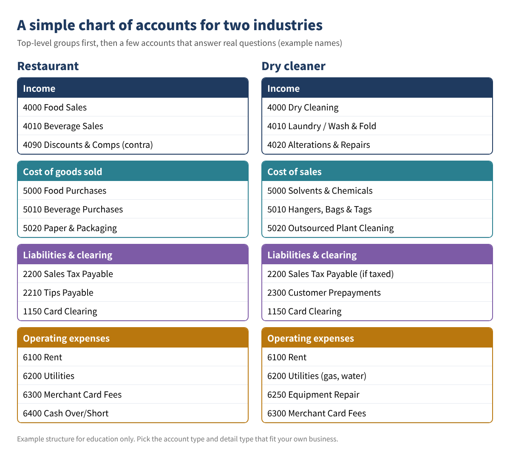
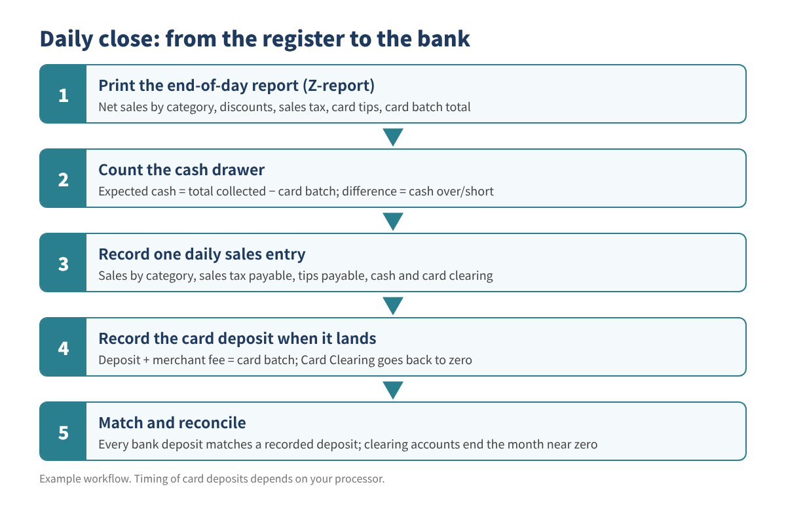
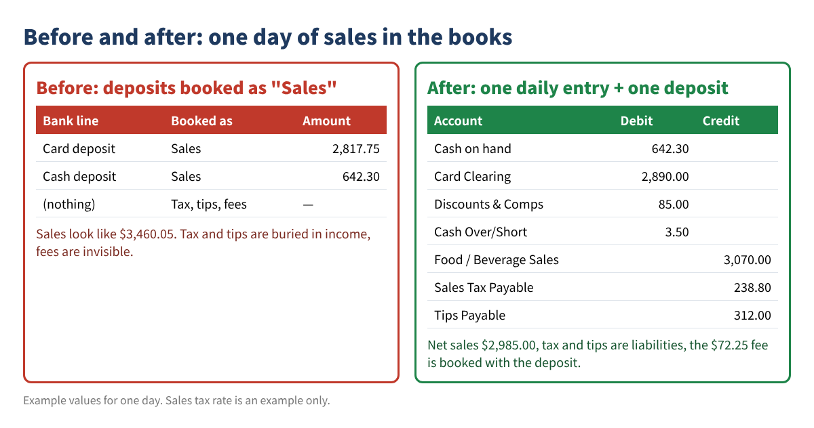

Restaurants and dry cleaners have something in common: dozens or hundreds of small sales every day, a mix of cash and cards, sales tax, and (for restaurants) tips that belong to employees. When the books are set up with a generic chart of accounts and every bank deposit is simply booked as "Sales," three problems show up fast: income is overstated, sales tax and tips are hidden inside revenue, and card processing fees disappear. At year end nobody can tell what was really earned.
This guide shows how to fix that yourself: build a short, industry-specific chart of accounts, import it into QuickBooks Online (with a note for Desktop users), and run a five-minute daily close that turns the register report into one clean entry that matches the bank.
Who this is for: owners and bookkeepers of restaurants, cafés, food trucks and dry cleaners who use QuickBooks Online or Desktop and want their sales, tax and deposits to tie out every day.
A chart of accounts is a list of buckets. Before you add a single account, write down the questions you want the books to answer each month. For a restaurant, that is usually: How much did food and drinks bring in separately? What did food cost as a percentage of food sales? How much sales tax and how many tips am I holding for someone else? What did card processing cost? A dry cleaner asks similar questions: dry cleaning vs. laundry vs. alterations, supply costs, outsourced plant costs, and customer prepayments.
Keep it short. Twenty to forty accounts are enough for most single-location shops. Use account numbers so the list sorts in a logical order (1000s assets, 2000s liabilities, 3000s equity, 4000s income, 5000s cost of goods sold, 6000s expenses).

| Account # and name | Type | Detail type (closest choice) | Why it exists |
|---|---|---|---|
| 1150 Card Clearing | Other Current Assets | Other Current Assets | Holds card sales until the processor deposit arrives |
| 2200 Sales Tax Payable | Other Current Liabilities | Sales Tax Payable | Tax you collected for the state |
| 2210 Tips Payable | Other Current Liabilities | Other Current Liabilities | Card tips owed to staff (restaurant) |
| 2300 Customer Prepayments | Other Current Liabilities | Other Current Liabilities | Paid at drop-off, garment not yet picked up (dry cleaner, accrual books) |
| 4000 Food Sales / Dry Cleaning | Income | Sales of Product Income or Service/Fee Income | Main revenue line |
| 4090 Discounts & Comps | Income | Discounts/Refunds Given | Shows giveaways instead of hiding them |
| 5000 Food Purchases / Solvents | Cost of Goods Sold | Supplies & Materials - COGS | Direct cost of what you sell |
| 6300 Merchant Card Fees | Expenses | Bank Charges | Processor fees taken out of deposits |
| 6400 Cash Over/Short | Expenses | Other Miscellaneous Service Cost (or nearest) | Daily drawer differences |
Table 1. Example accounts with QuickBooks Online account types. Detail type names can differ slightly in your company; pick the nearest one in the drop-down.
Type the list into a sheet with one header row and one account per row. The columns most people use are:
Account Number (only if you turn on account numbers in your settings)Account NameType (for example Income, Expenses, Other Current Liabilities)Detail TypeTwo formulas help you catch mistakes before importing. If names are in column B, flag duplicates with =IF(COUNTIF($B$2:$B$60,B2)>1,"DUPLICATE",""). To catch accounts that already exist in your company, export your current chart of accounts to a second tab and use =IF(ISNUMBER(MATCH(B2,Existing!A:A,0)),"ALREADY EXISTS",""). Save the finished tab as CSV (UTF-8).
QuickBooks Desktop users: Desktop can bring in lists from Excel or from an IIF file through its import utilities. Steps differ by version and year, so follow Intuit's Desktop help for your release, and test with two or three accounts in a backup copy first.
The register or POS prints an end-of-day report (often called a Z-report). Copy its totals into one row per day. Here is a worked example for one restaurant day (all values are examples, and the 8% tax rate is only an example):
| Cell | Line | Value | Formula |
|---|---|---|---|
| B2 | Food sales | 2,450.00 | from Z-report |
| B3 | Beverage sales | 620.00 | from Z-report |
| B4 | Discounts & comps | 85.00 | from Z-report |
| B5 | Net sales | 2,985.00 | =B2+B3-B4 |
| B6 | Sales tax collected | 238.80 | from Z-report (check: =ROUND(B5*0.08,2)) |
| B7 | Card tips | 312.00 | from Z-report |
| B8 | Total collected | 3,535.80 | =B5+B6+B7 |
| B9 | Card batch total (incl. tips) | 2,890.00 | from card terminal |
| B10 | Expected cash | 645.80 | =B8-B9 |
| B11 | Cash counted | 642.30 | count the drawer, minus starting cash |
| B12 | Cash over (+) / short (−) | −3.50 | =B11-B10 |
Table 2. Example daily close for one restaurant day. Example values only.
A dry cleaner uses the same sheet with different sales lines (dry cleaning, laundry, alterations) and usually no tips. If your state taxes some services and not others, keep taxable and non-taxable sales on separate lines; check your state's sales tax agency for which services are taxable.

Each day becomes one balanced entry. Debits are where the money went; credits are why you received it:
| Account | Debit | Credit |
|---|---|---|
| Cash on hand (or Undeposited Funds) | 642.30 | |
| Card Clearing | 2,890.00 | |
| Discounts & Comps | 85.00 | |
| Cash Over/Short | 3.50 | |
| Food Sales | 2,450.00 | |
| Beverage Sales | 620.00 | |
| Sales Tax Payable | 238.80 | |
| Tips Payable | 312.00 | |
| Total | 3,620.80 | 3,620.80 |
Table 3. Example daily sales entry. Debits and credits must be equal.
In your sheet, add a check cell: =ROUND(SUM(debits)-SUM(credits),2). It must show 0.00 before you post. A cash overage would be a credit to Cash Over/Short instead of a debit.
Journal entry or sales receipt? In QuickBooks Online you can record the day as a journal entry (+ New, Journal entry) or as a sales receipt to a customer named something like "Daily Sales," using items for each sales line, a discount line and tips. Intuit's help article "Record total daily sales in QuickBooks" describes the sales-receipt method. If you use QuickBooks Online's built-in sales tax feature, the sales-receipt method is usually the safer choice, because tax recorded by journal entry may not flow into the sales tax screens the same way; confirm this in Intuit's help before choosing.
One or two days later the processor deposits $2,817.75, not $2,890.00, because it kept a $72.25 fee. Record the deposit as: debit Checking 2,817.75, debit Merchant Card Fees 72.25, credit Card Clearing 2,890.00. In QuickBooks Online you can do this in a bank deposit with a negative line for the fee, and then match the bank feed line to that deposit instead of adding a new one. After each batch is deposited, Card Clearing should go back to zero. If it does not, a batch is missing or was recorded twice.
Cash works the same way: when you take cash to the bank, move it from Cash on hand (or Undeposited Funds) to Checking in one deposit that equals the deposit slip.

Tips Payable goes down when tips are paid to employees through payroll or in cash. Tip reporting and withholding have their own payroll rules; see IRS Topic No. 761 (Tips) and talk to your payroll provider. Some larger food and beverage businesses also file an annual tip information return (Form 8027); check the IRS instructions to see if it applies to you. Sales Tax Payable goes down when you file and pay your state return. At month end, both balances should equal what you actually owe.
Yes, if you record the day with items (sales receipt method) and run sales-by-item reports. Separate income accounts make the profit and loss easier to read, so many shops use both.
Yes. A few dollars a day is normal; a pattern of shortages on certain shifts is worth looking into.
It is still useful, because the deposit is net of fees and often combines two days. Card Clearing lets you prove each batch arrived.
That depends on your accounting method and when you are paid. Cash-basis shops usually record when payment is received; if customers pay at drop-off and you keep accrual books, a prepayment account helps. Ask your tax preparer which method you use.
QuickBooks is a registered trademark of Intuit Inc.; not affiliated with or endorsed by Intuit.
This article is for education only and is not tax, legal or accounting advice, and it does not guarantee any result. Software screens change; follow Intuit's current help articles, and check your state's sales tax rules or ask a qualified professional about your situation.